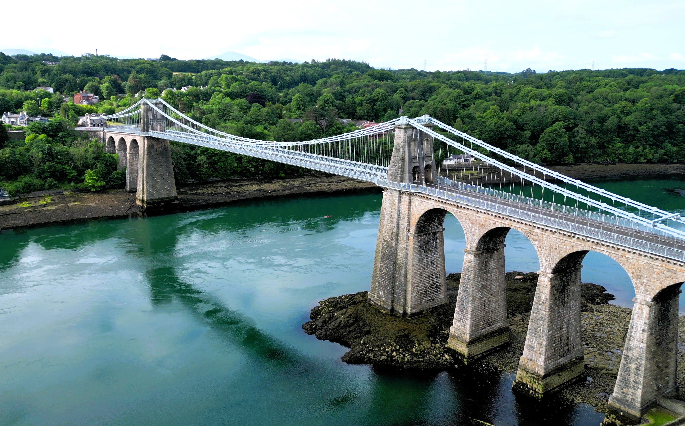

Senedd Petition
Tell the Welsh Government: Build a new crossing over the Menai.
ADD YOUR NAME
Anglesey and the mainland need a reliable, resilient new crossing. Delays and disruption are costing the North Wales economy at least £30 million every year.
Tell the Welsh Government: Build a new crossing over the Menai.
ADD YOUR NAMEHelp fund the campaign for a resilient connection between Anglesey and Bangor.
DONATEWe want to field 35 candidates to Isle of Anglesey Council at the local elections in May 2027. If you live or work on the island and want to stand, sign up.
STAND FOR COUNCIL